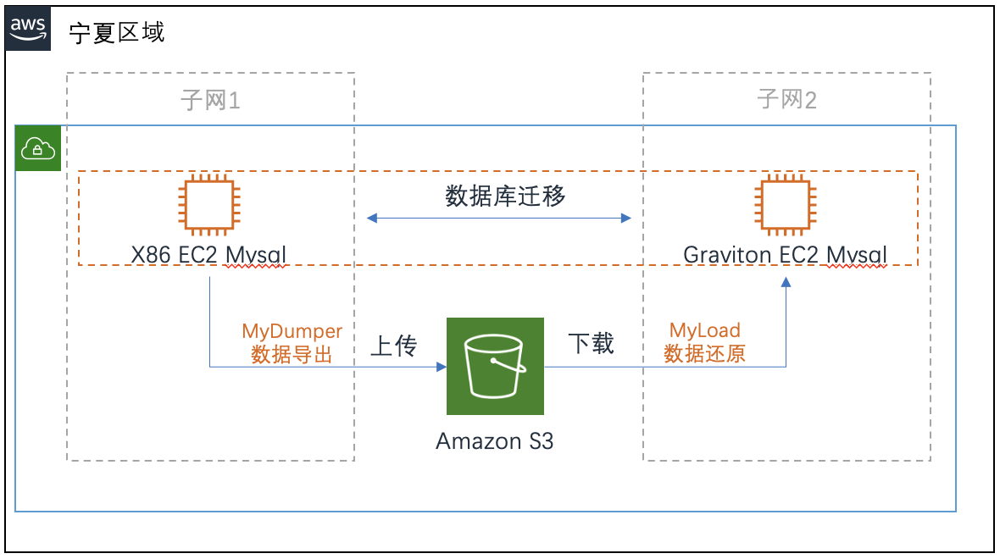
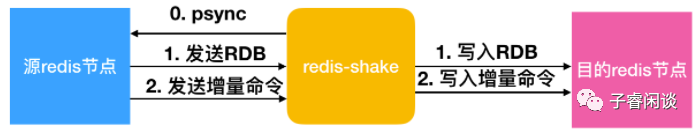
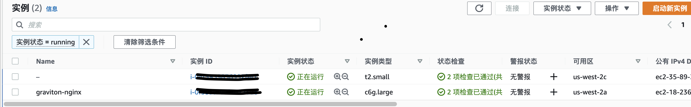
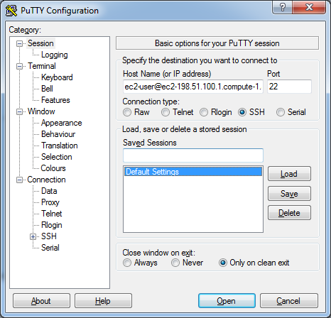
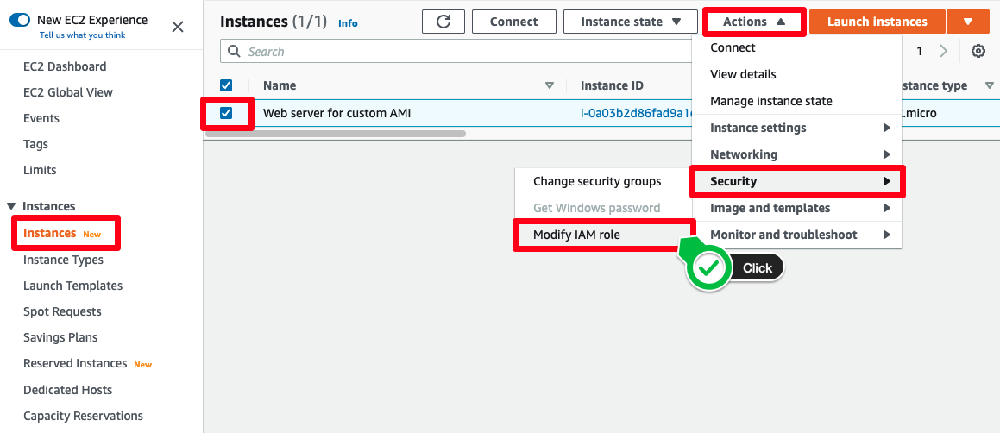
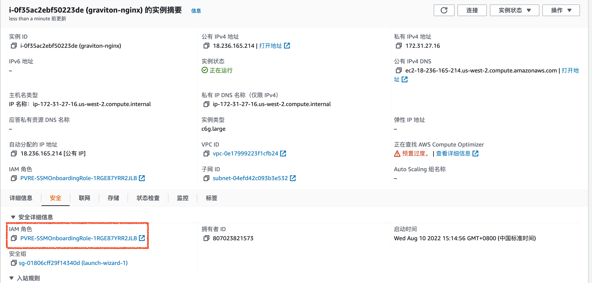
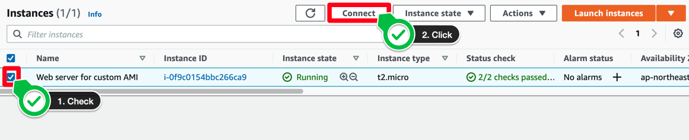
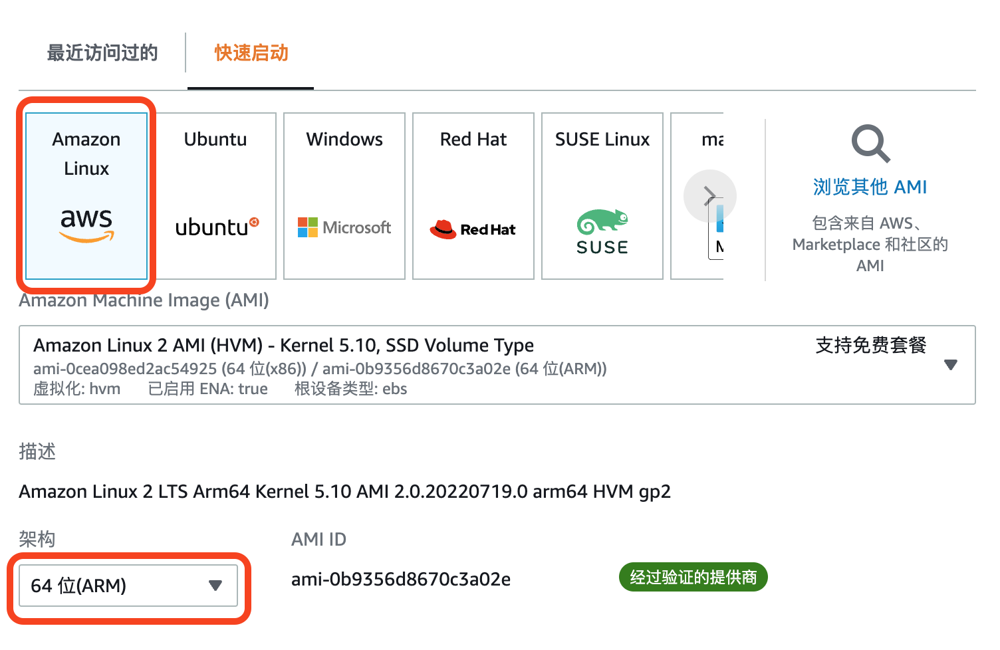
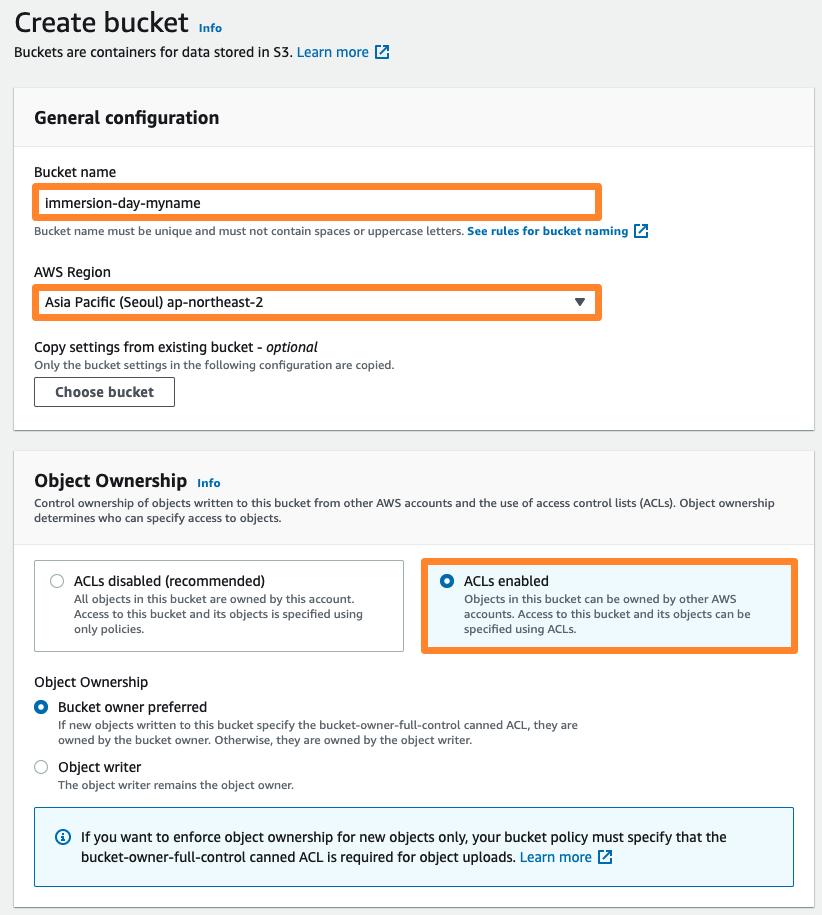
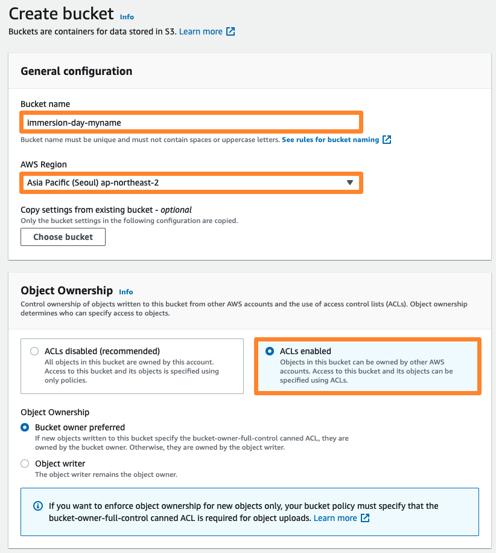

数据层迁移
目标：通过本次数据库迁移实验，使学员掌握常见的关系型数据库mysql和非关系型数据库Redis的部署和迁移。
本次迁移主要包含redis和mysql两种类型数据库的实验，
数据层迁移场景
小汪公司正在为如何降本增效，尤其是数据库层的计划评估方案，公司内部有多台Mysql数据库服务器，需要一个数据库的迁移ARM架构的评估和测试。小汪公司IT和业务部协商提供了一条测试的业务线做本次迁移评估。此业务线使用了Redis和Mysql，前端使用apache和Java架构的应用。
Mysql迁移是最常见的数据库迁移场景，有大量的第三方和云原生工具，本次实验场景采用mysqldump命令进行迁移。
Redis迁移是缓存常见的迁移场景，本次采用redis-shake工具进行迁移。
Mysql 迁移
本次Mysql迁移采用的是mydumper,myload进行备份还原， mydumper,myload是mysql的多线程导入导出工具
迁移流程如下： 
1.通过mydumper工具把原X86数据库导出到X86本地磁盘，
2.把备份文件上传到S3存储桶，
3.把S3桶的数据库备份文件下载到Graviton迁移目标主机上
4.通过myload对目标Graviton主机进行数据库还原覆盖操作
Redis 迁移
redis迁移一般有redis-shake，主从复制PSYNC，RDB迁移、AOF迁移，Dump迁移等，本次实验使用redis-shake方式
redis-shake介绍

redis-shake就是一款非常好用的工具，可以支持备份、恢复、解析、同步等功能，主要的功能有：
decode，对RDB文件进行读取，并以json格式存储
restore，将RDB文件恢复到目的Redis服务器
dump，将源Redis服务器的数据通过RDB文件的方式保存下来
sync，支持源Redis和目的Redis的数据同步，通过模拟成Slave(使用psync)，支持全量和增量数据的同步，对单节点、主从、集群环境之间进行同步(2.8-5.0版本，codis环境)，也支持云上环境
rump，使用scan和restore命令进行数据迁移，对不支持psync命令的环境可以使用这种方式，仅支持全量的数据迁移
1. 数据库迁移前准备，以Redis 和 Mysql 为例的实验手册
1.1 登录实验账号，确认实验环境
请参考“登录实验环境账号—登录AWS EventEngine说明”
1.2 检查实验环境中的数据库实例
 本次Mysql的账号为：
root
密码为：
password
查询并噁登陆本次源环境的Mysql
使用入第三方的ssh工具如putty或者AWS SSM工具连接服务器。
检查redis服务器
登录redis服务器，-h替换服务器IP，-a后替换redis密码
redis-cli -h host -p 6379 -a password
检查mysql服务器
登录数据库，请把-u后面替换数据库用户名，-p后面替换数据库密码 -h后面替换数据库服务器IP地址
mysql -uroot -ppassword -h 127.0.0.1 -P 3306
切换到当前数据库上
Use data;
查看库下表信息
show tables;
如图：todo
退出数据库
quit
1.3 准备登录实例
方法1，使用putty等linux工具连接到EC2， 打开putty，指定pem文件，服务器地址
Amazon的EC2中，默认是不允许使用用户名和密码直接连接Instance的，而是通过AWS (Amazon Web Service)提供的证书。在第一次使用EC2的时候，AWS会要求你创建一个证书并下载，证书是一个.pem文件。

Host Name (主机名) 框中，输入 主机DNS或者公网IP地址
Amazon Linux AMI，用户名称是 ec2-user
端口： 22
在 Category (类别) 窗格中，展开 Connection (连接)，再展开 SSH，然后选择 Auth (身份验证)。完成以下操作：
单击 Browse (浏览)。
选择您为密钥对生成的 .ppk 或 .pem 文件，然后单击 Open (打开)。
如果这是您第一次连接到此实例，PuTTY 会显示安全警告对话框，询问您是否信任您要连接到的主机。请单击Yes
方法2，使用AWS 的 SSM 工具链接 点击， 确认你的EC2是否具有对应的ssm 角色
在左侧的控制台导航菜单选择EC2 Dashboard（EC2控制面板） 首先在控制台中上方搜索栏搜索 EC2，并从结果列表中选中此服务。然后选中对应的EC2，点击操作按钮，安全，编辑IAM角色。  如果已经有对应的SSM角色，则说明有SSM连接的权限。 
点击连接按钮，

选择会话管理器session manager，点击连接，进入这台EC2的操作系统命令行界面

2 ARM架构的数据库部署
2.1 部署Mysql的Graviton实例，导航到EC2控制台
创建EC2，在左侧的控制台导航菜单选择EC2 Dashboard（EC2控制面板）
首先在控制台中上方搜索栏搜索 EC2，并从结果列表中选中此服务。
验证控制台右上角的Region（区域）是否与本次实验的Region值一致，然后从列表中选择 Launch instance（启动实例）下拉菜单，启动实例
选择启动实例 注意：架构处的下拉框请选中 64位（ARM），如下图 
启动实例的参数如下：
创建EC2如下：
名称： target Mysql
实例类型：c6g.large
Amazon Machine Image（AMI）： Amazon Linux 2 AMI（HVM）
架构：64位（ARM）
密钥对名称：自己的用户名
VPC： lab
安全组：lab
存储：默认
配置用户数据：
角色：
最后点击启动实例按钮在，请在summary（汇总）核对下参数信息。 启动完毕EC2后，可以悬着 View all instance（查看所有实例），等待实例的状态显示为Running（正在运行），这表示实例已完成启动。
2.2 部署Redis的Graviton实例，导航到EC2控制台
使用同样的方法创建一台Redis实例
启动实例的参数如下：
创建EC2如下：
名称： target redis
实例类型：c6g.large
Amazon Machine Image（AMI）： Amazon Linux 2 AMI（HVM）
架构：64位（ARM）
密钥对名称：自己的用户名
VPC： lab
安全组：lab
存储：默认
配置用户数据：
角色：
3数据的迁移实施
3.1 redis迁移
redis-shake是一个常用的迁移工具，它提供了备份、恢复、解析、同步等功能。
安装redis
$ sudo yum install redis
$ systemctl start redis
安装redis-shake
wget https://github.com/alibaba/RedisShake/releases/redis-shark-v2.0.2.tar.gz
tar zxvf redis-shark-v2.0.2.tar.gz
配置redis-shake
启动redis-shake
3.2 mysql迁移
首先登录目标gravition的主机，使用Putty或者SSM工具
备份hellodb数据库到当前目录下
$ mydumper -uuser -ppassword -B data -o ./
使用复制功能，复制mysql数据文件
首先创建一个bucket桶
在左侧的控制台导航菜单选择S3 Dashboard（EC2控制面板）
首先在控制台中上方搜索栏搜索 S3，并从结果列表中选中此服务。然后选中对应的S3，点击操作按钮
点击创建桶
 桶名请使用自己的组名+姓名的拼音命名。 最后点击创建

桶名请使用自己的组名+姓名的拼音命名。 最后点击创建

把文件上传到S3
源端的mysql已经安装AWS CLI
然后拷贝到目标服务器的对应目录
使用AWS CLi命令
aws configure
填写AK，SK以及默认登录的地域等信息
AWS Access Key ID [None]:
AWS Secret Access Key [None]:
Default region name [None]:
Default output format [None]:
登录源端服务器并复制存储桶的对象文件
aws s3 cp ./mysql.bak s3://yourbucket/
登录目标端gravition服务器并下载S3的备份文件
aws s3 cp s3://yourbucket/mysql.bak ./
然后还原并覆盖目标数据库
myloader -uuser -ppassword -o -B data -o -d ./mysql.bak
数据库的测试和验证
登录数据库，请把-u后面替换数据库用户名，-p后面替换数据库密码 -h后面替换数据库服务器IP地址
mysql -uroot -ppassword -h 127.0.0.1 -P 3306
切换到当前数据库上
Use data;
查看库下表信息是否与源库一致
show tables;
如图：todo

总结
本次迁移完成了redis和mysql的数据迁移，验证。
本次redis使用redis-shake工具进行迁移。Mysql迁移采用的是mydumper,myload进行备份还原。
接下来开始准备应用迁移。